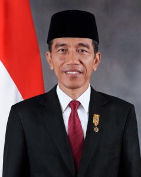

|

Nama Lengkap : Ir. H Joko Widodo
Tempat, Tanggal Lahir : Surakarta, Jawa Tengah,21 Juni 1961
Partai politik : PDI-P
Suami/istri : Iriana
Anak : Gibran Rakabuming
Kahiyang Ayu
Kaesang Pangarep
Orang tua : Widjiatno Notomihardjo (Ibu) Sudjatmi (Ibu)
Kerabat : Bobby Nasution (menantu) Anwar Usman (Ipar)
Almamater : Universitas Gadjah Mada
Pekerjaan : Pengusaha Politikus
Alamat : Istana Bogor
Instagram : @jokowi